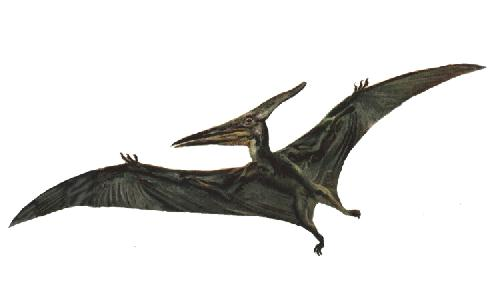

Pterosaurs

Pterosaurs (pronounced /ˈtɛrəsɔr/, from the Greek πτερόσαυρος, pterosauros, meaning "winged lizard", often referred to as pterodactyls, from the Greek πτεροδάκτυλος, pterodaktulos, meaning "winged finger" /ˌtɛrəˈdæktɨl/) were flying reptiles of the clade or order Pterosauria. They existed from the late Triassic to the end of the Cretaceous Period (220 to 65.5 million years ago). Pterosaurs are the earliest vertebrates known to have evolved powered flight. Their wings were formed by a membrane of skin, muscle, and other tissues stretching from the legs to a dramatically lengthened fourth finger. Early species had long, fully-toothed jaws and long tails, while later forms had a highly reduced tail, and some lacked teeth. Pterosaurs spanned a wide range of adult sizes, from the very small Nemicolopterus to the largest known flying creatures of all time, including Quetzalcoatlus and Hatzegopteryx.[1][2][3]
Pterosaurs are sometimes referred to in the popular media as dinosaurs, but this is incorrect. The term "dinosaur" is properly restricted to a certain group of terrestrial reptiles with a unique upright stance (superorder Dinosauria), and therefore excludes the pterosaurs, as well as the various groups of extinct aquatic reptiles, such as ichthyosaurs, plesiosaurs, and mosasaurs.
The anatomy of pterosaurs was highly modified from their reptilian ancestors for the demands of flight. Pterosaur bones were hollow and air filled, like the bones of birds. They had a keeled breastbone that was developed for the attachment of flight muscles and an enlarged brain that shows specialised features associated with flight.[7] In some later pterosaurs, the backbone over the shoulders fused into a structure known as a notarium, which served to stiffen the torso during flight, and provide a stable support for the scapula (shoulder blade).
[edit]Wings
Reconstructed wing planform of Quetzalcoatlus compared to the Wandering Albatross and the Andean Condor. (not to scale).
Pterosaur wings were formed by membranes of skin and other tissues. The primary membranes attached to the extremely long fourth finger of each arm and extended along the sides of the body to the legs.
While historically thought of as simple, leathery structures composed of skin, research has since shown that the wing membranes of pterosaurs were actually highly complex and dynamic structures suited to an active style of flight. First, the wings were strengthened by closely spaced fibers called actinofibrils.[8] The wing membranes also contained a thin layer of muscle, fibrous tissue, and a unique, complex circulatory system of looping blood vessels.[9]
As evidenced by hollow cavities in the wing bones of larger species and soft tissue preserved in at least one specimen, some pterosaurs extended their system of respiratory air sacs (see Paleobiology section below) into the wing membrane itself.[10]
[edit]Parts of the pterosaur wing
The pterosaur wing membrane is divided into three basic units. The first, called the propatagium ("first membrane"), was the forward-most part of the wing and attached between the wrist and shoulder, creating the "leading edge" during flight. This membrane may have incorporated the first three fingers of the hand, as evidenced in some specimens.[9] The brachiopatagium ("arm membrane") was the primary component of the wing, stretching from the highly elongated fourth finger of the hand to the hind limbs (though where exactly on the hind limbs it anchored is controversial and may have varied between species, see below). Finally, at least some pterosaur groups had a membrane that stretched between the legs, possibly connecting to or incorporating the tail, called the uropatagium.